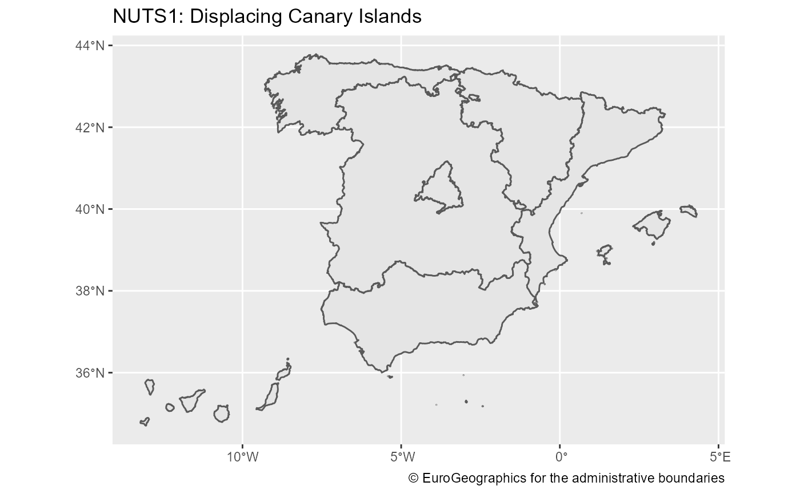
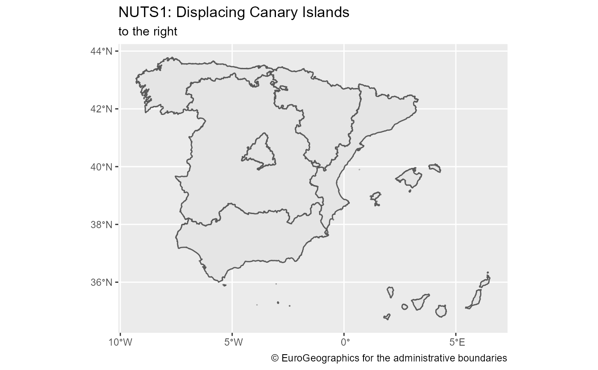
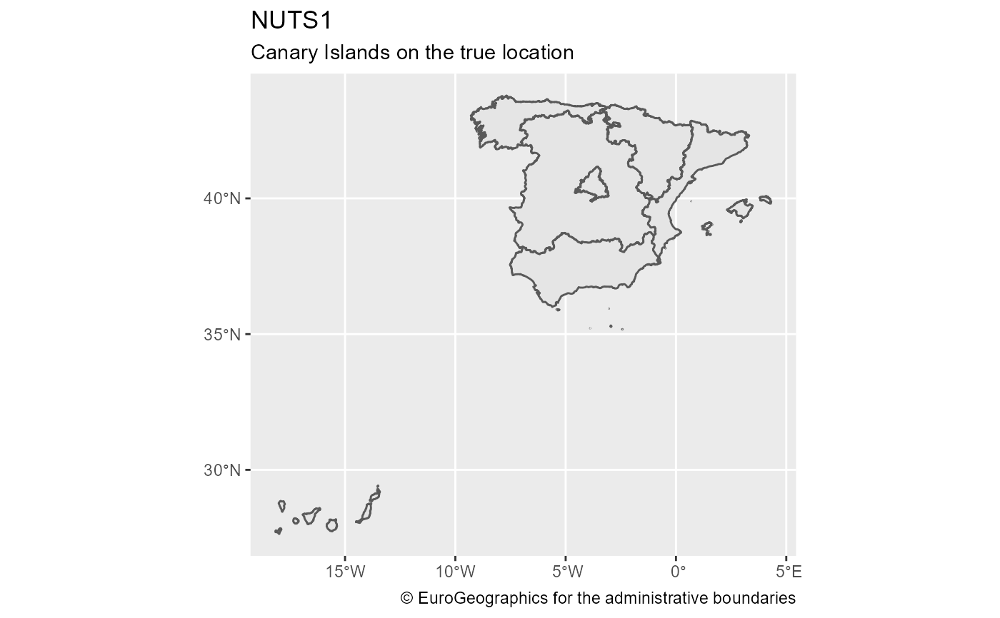
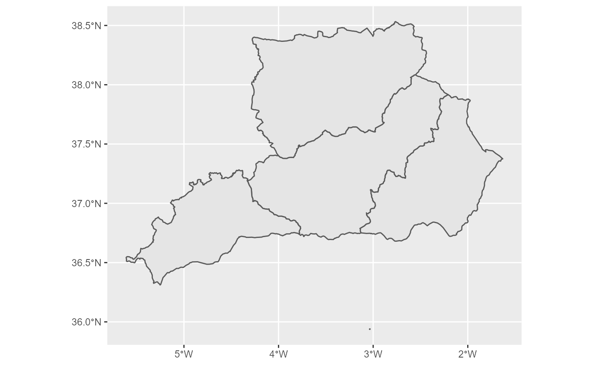
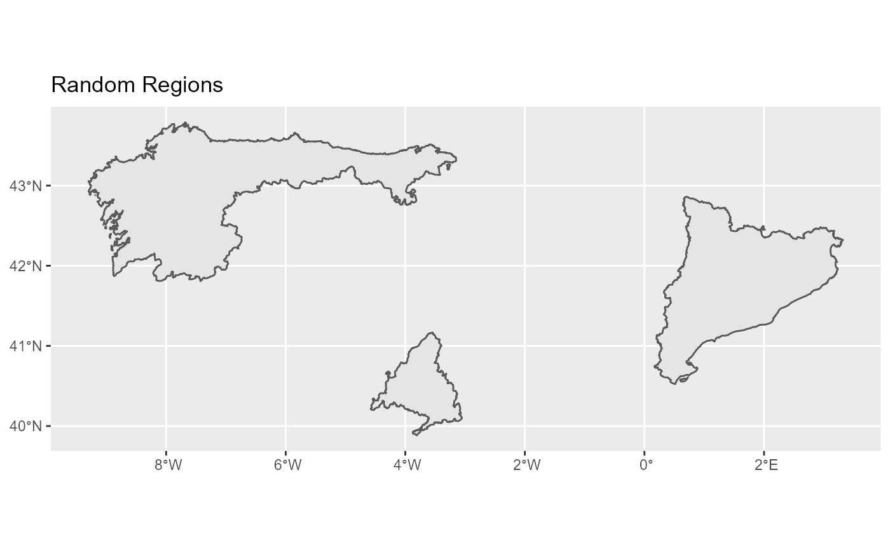
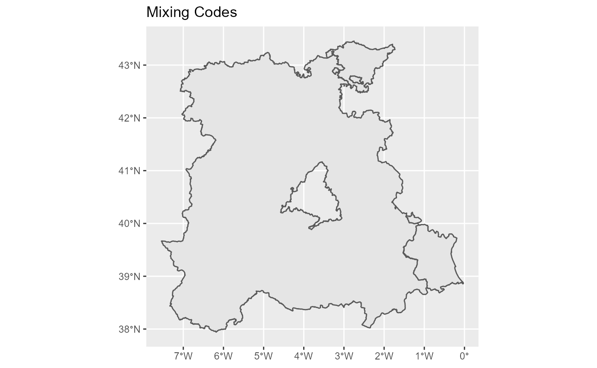

Returns NUTS regions of Spain as polygons and points at a specified scale, as provided by GISCO (Geographic Information System of the Commission, depending of Eurostat).
NUTS are provided at three different levels:
"0": Country level
"1": Groups of autonomous communities
"2": Autonomous communities
"3": Roughly matches the provinces, but providing specific individual objects for each major island
Usage
esp_get_nuts(
year = "2016",
epsg = "4258",
cache = TRUE,
update_cache = FALSE,
cache_dir = NULL,
verbose = FALSE,
resolution = "01",
spatialtype = "RG",
region = NULL,
nuts_level = "all",
moveCAN = TRUE
)Arguments
- year
Release year of the file. One of
"2003","2006","2010","2013","2016"or"2021".- epsg
projection of the map: 4-digit EPSG code. One of:
"4258": ETRS89"4326": WGS84"3035": ETRS89 / ETRS-LAEA"3857": Pseudo-Mercator
- cache
A logical whether to do caching. Default is
TRUE. See About caching.- update_cache
A logical whether to update cache. Default is
FALSE. When set toTRUEit would force a fresh download of the source file.- cache_dir
A path to a cache directory. See About caching.
- verbose
Logical, displays information. Useful for debugging, default is
FALSE.- resolution
Resolution of the geospatial data. One of
"60": 1:60million
"20": 1:20million
"10": 1:10million
"03": 1:3million
"01": 1:1million
- spatialtype
Type of geometry to be returned:
"LB": Labels - point object."RG": Regions - polygon object.
- region
Optional. A vector of region names, NUTS or ISO codes (see
esp_dict_region_code()).- nuts_level
NUTS level. One of "0" (Country-level), "1", "2" or "3". See Description.
- moveCAN
A logical
TRUE/FALSEor a vector of coordinatesc(lat, lon). It places the Canary Islands close to Spain's mainland. Initial position can be adjusted using the vector of coordinates. See Displacing the Canary Islands.
Note
Please check the download and usage provisions on
giscoR::gisco_attributions()
About caching
You can set your cache_dir with esp_set_cache_dir().
Sometimes cached files may be corrupt. On that case, try re-downloading
the data setting update_cache = TRUE.
If you experience any problem on download, try to download the
corresponding .geojson file by any other method and save it on your
cache_dir. Use the option verbose = TRUE for debugging the API query.
Displacing the Canary Islands
While moveCAN is useful for visualization, it would alter the actual
geographic position of the Canary Islands. When using the output for
spatial analysis or using tiles (e.g. with esp_getTiles() or
addProviderEspTiles()) this option should be set to FALSE in order to
get the actual coordinates, instead of the modified ones.
See also
giscoR::gisco_get_nuts(), esp_dict_region_code().
Other political:
esp_codelist,
esp_get_can_box(),
esp_get_capimun(),
esp_get_ccaa(),
esp_get_comarca(),
esp_get_country(),
esp_get_gridmap,
esp_get_munic(),
esp_get_prov(),
esp_get_simpl_prov()
Other nuts:
esp_nuts.sf
Examples
NUTS1 <- esp_get_nuts(nuts_level = 1, moveCAN = TRUE)
library(ggplot2)
ggplot(NUTS1) +
geom_sf() +
labs(
title = "NUTS1: Displacing Canary Islands",
caption = giscoR::gisco_attributions()
)

NUTS1_alt <- esp_get_nuts(nuts_level = 1, moveCAN = c(15, 0))
ggplot(NUTS1_alt) +
geom_sf() +
labs(
title = "NUTS1: Displacing Canary Islands",
subtitle = "to the right",
caption = giscoR::gisco_attributions()
)

NUTS1_orig <- esp_get_nuts(nuts_level = 1, moveCAN = FALSE)
ggplot(NUTS1_orig) +
geom_sf() +
labs(
title = "NUTS1",
subtitle = "Canary Islands on the true location",
caption = giscoR::gisco_attributions()
)

AndOriental <-
esp_get_nuts(region = c("Almeria", "Granada", "Jaen", "Malaga"))
ggplot(AndOriental) +
geom_sf()

RandomRegions <- esp_get_nuts(region = c("ES1", "ES300", "ES51"))
ggplot(RandomRegions) +
geom_sf() +
labs(title = "Random Regions")

MixingCodes <- esp_get_nuts(region = c("ES4", "ES-PV", "Valencia"))
ggplot(MixingCodes) +
geom_sf() +
labs(title = "Mixing Codes")
